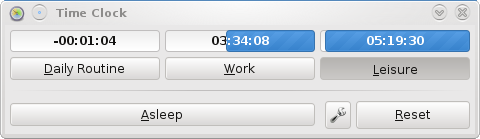

A minimal-hassle way to manage your time
- Dependencies
- Python 2.4+ and PyGTK 2.x.
- Caveats
- Currently only tested on Linux. Minimum required dependency versions
not yet confirmed.
- Installation
- Simply unpack and run timeclock.py
- License
- GNU GPL 2.0 or later
- Authors
- deitarion/SSokolow (Stephan Sokolow)
- FunnyMan3595 (Charlie Nolan)
Download
You can download this project in either
zip or
tar formats.
You can also clone the project with Git
by running:
$ git clone git://github.com/ssokolow/timeclock